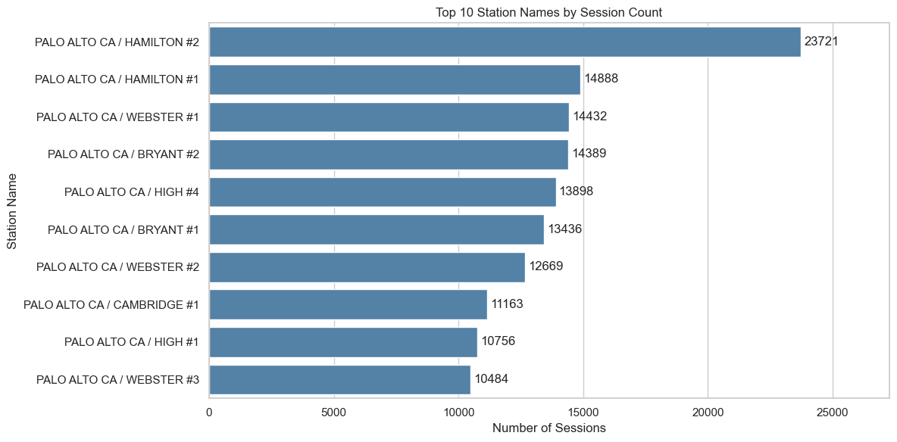
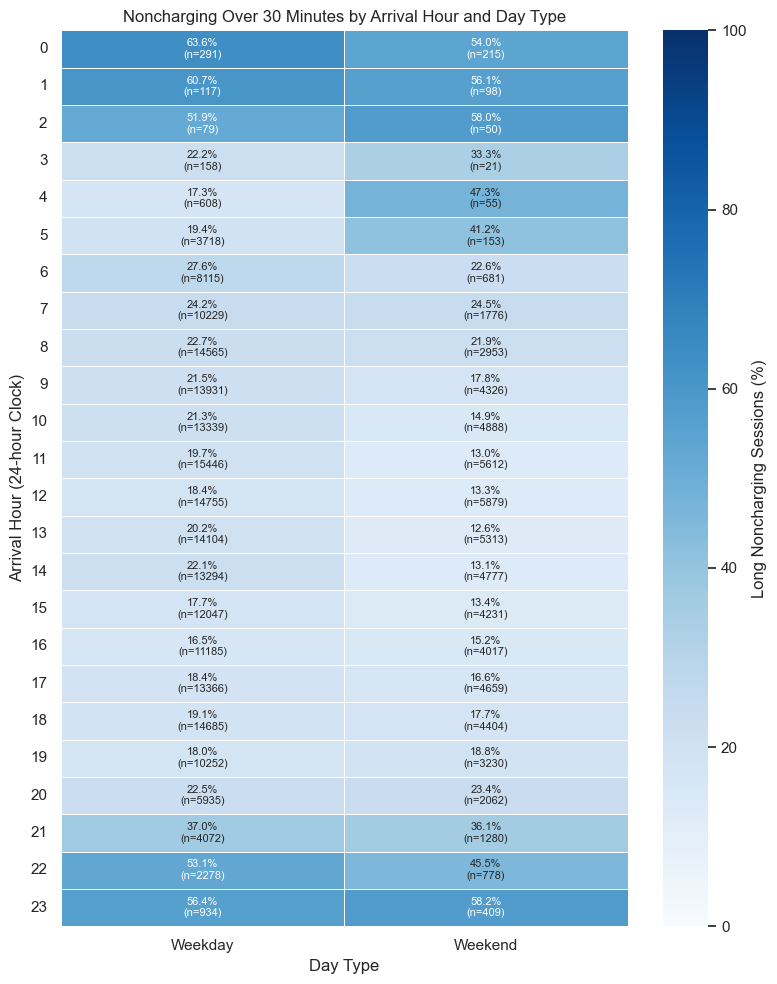
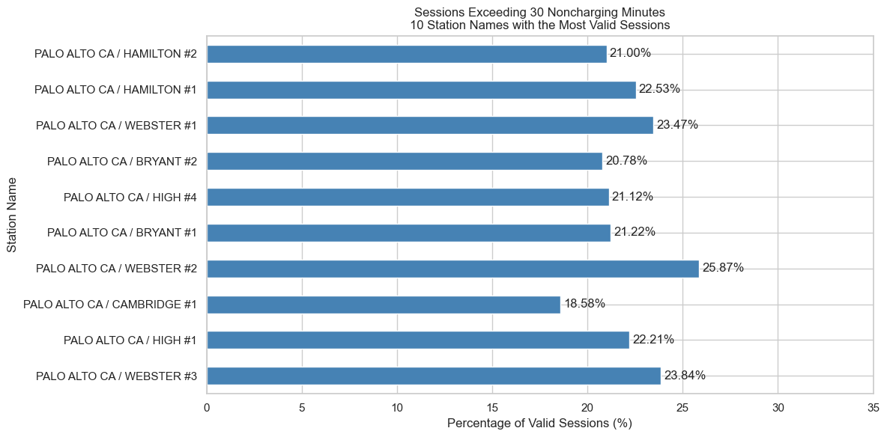
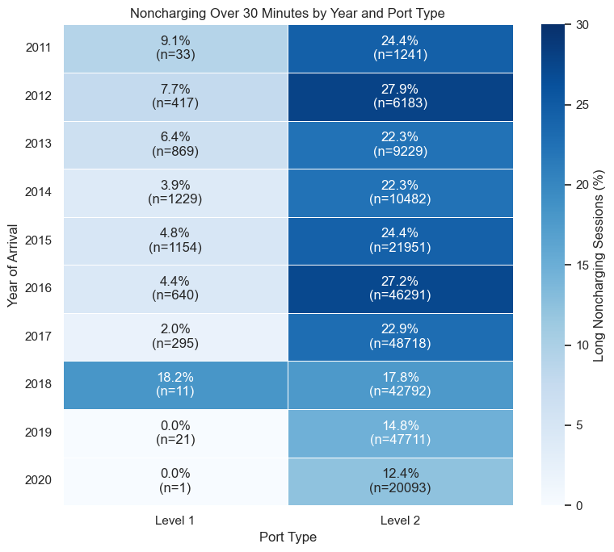
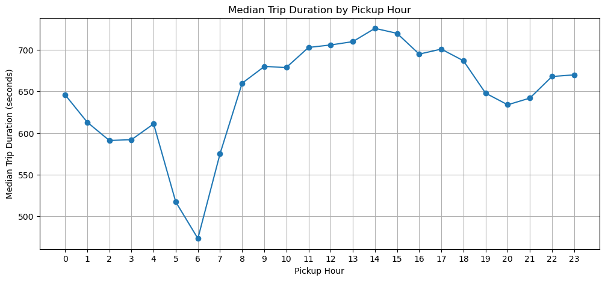
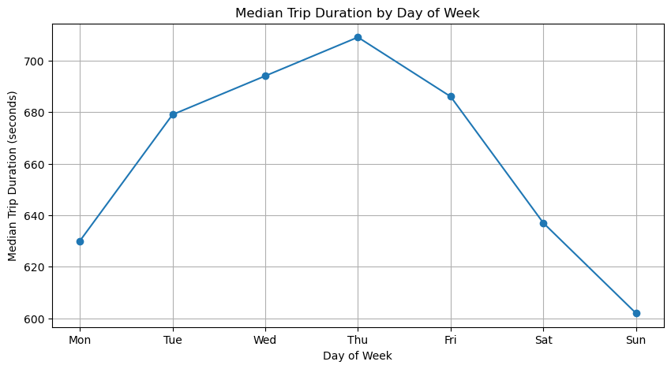
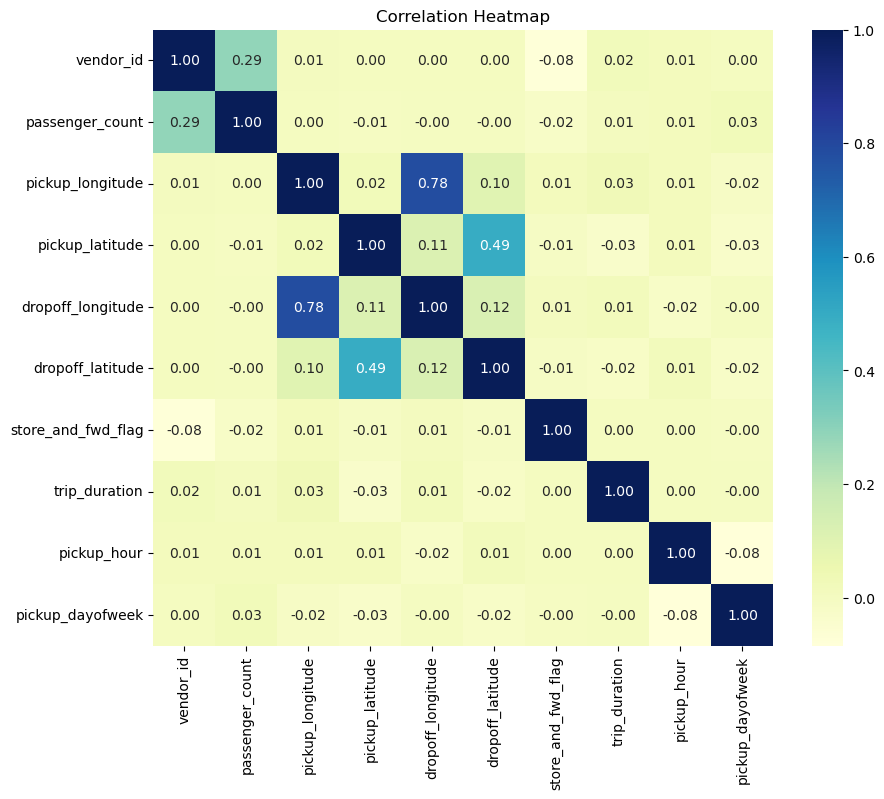
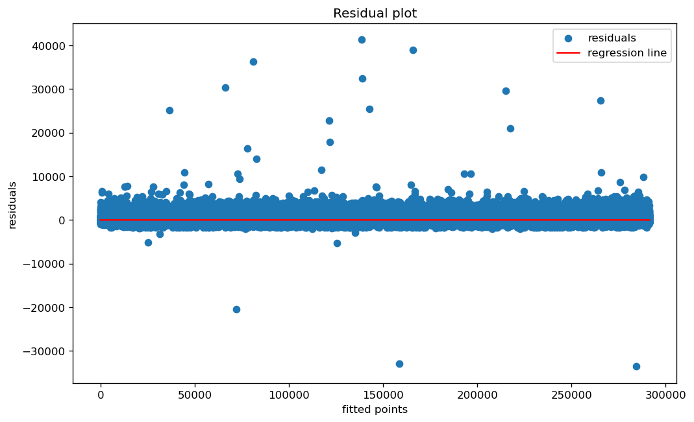
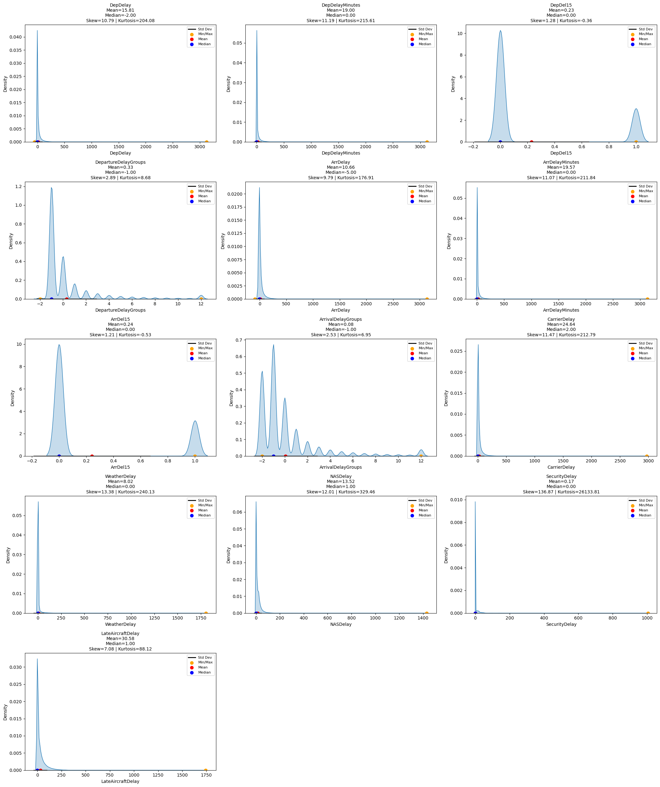
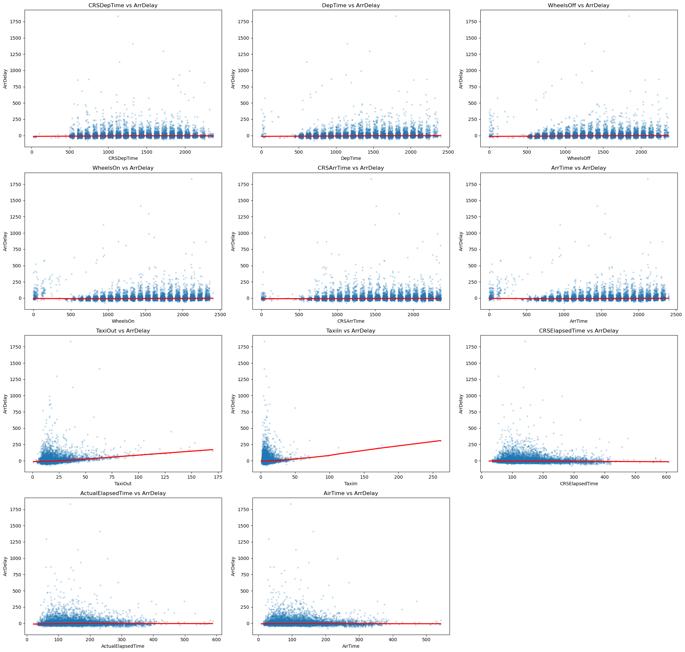

12 Jun 2026Intro to Programming
Data · ML · BI
Kaggle · Tableau · Excel · Python
Charts that decide.
Python models, Tableau workbooks, and Excel root-cause work — with the actual diagrams from the notebooks, not stock art.
1.45MNYC taxi trips modelled
ChargePointEV sessions, 2011–2020
5Kaggle certificates
5Tableau workbooks
01IngestCSV, Excel, ChargePoint, BTS flights
02CleanOutliers, missing ports, odd latitudes
03VisualiseSeaborn, Tableau, PDCA boards
04ModelKNN, linear, logistic, random forest
05DecideDwell time, delays, a 22% revenue drop
Kaggle Learn
Certificates.
Completed June–2026 onward. Click any certificate to open it full size.
25 Jun 2026Python
23 Jul 2026Intro to Machine Learning
Kaggle LearnML Explainability
Kaggle LearnIntermediate ML
01 — Python · scikit-learn
EV charger occupancy.
ChargePoint CY20Q4 sessions. Question: which stations and hours leave a car plugged in without charging for more than 30 minutes — and can a model flag it for a web app?




02 — Python · 1.45 million rows
NYC taxi duration.
Kaggle-scale trip table. Structure first, then outliers and odd latitudes, then KNN / linear models and residual checks.




03 — Python · 2018–2024
Flight delay structure.
BTS-style flight table: delay densities, taxi-out vs arrival delay, KNN and linear models on elapsed time.


04 — Tableau
Workbooks.
Five .twb files: Superstore, coffee chain, Brazil tourism, console games, and a US hotel survey.
SuperStore
Orders, region, category, sales, discount, profit — shelf views across seven sheets.
Coffee Chain
Five Q1 worksheets on product, market, and profit questions.
Brazil Tourism
Six sheets on arrivals and destination mix.
Console Games
Four sheets on platform and title performance.
Hotels Survey Analysis
Named views, not “Sheet 1”: Likert scores by question, score by country, Northeastern US responses by gender, UK weekly responses by state and category.
05 — Excel
Why revenue fell 22%.
Practical Application on sales_data.xlsx. Five whys, then PDCA — not a dump of pivot tables.
- Why 1 Fewer customers are purchasing.
- Why 2 Fewer customers in key groups are converting.
- Why 3 Product mix and promotions stopped landing.
- Why 4 Marketing ROI and segmentation drifted.
- Why 5 No weekly loop to catch the drop early.
Which products, which customers, did ROI fall?
Transactions, demographics, spend, product performance.
Failed campaigns, underperforming SKUs, silent segments.
Retarget, re-segment, watch revenue every week.
06 — Python basics
Student performance.
Training notebook: types, operators, branches, loops — then a pass-rate insight on a marks list. The habit under the larger models.